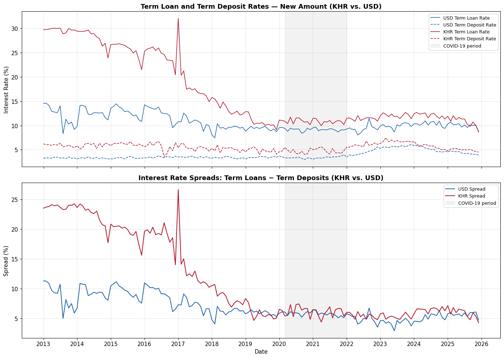
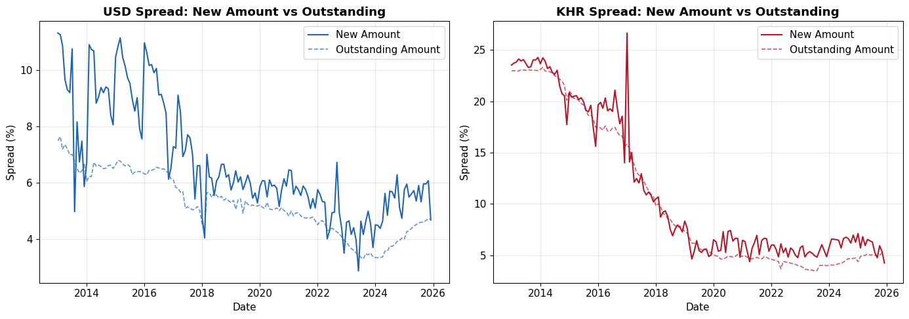

import pandas as pd
import numpy as np
import matplotlib.pyplot as plt
import matplotlib.dates as mdates
import warnings
warnings.filterwarnings('ignore')
# Set plot style
plt.rcParams['figure.figsize'] = (14, 6)
plt.rcParams['font.size'] = 11
plt.rcParams['axes.grid'] = True
plt.rcParams['grid.alpha'] = 0.3Notebook 01: Data Preparation
Goal: Load the raw NBC interest rate data, extract Term Loans and Term Deposits for both currencies (KHR and USD), compute interest rate spreads, and save clean CSVs.
Data Source: National Bank of Cambodia — Deposit Money Banks’ Interest Rates on Deposits and Loans
Rate Type: Weighted Average Rate on New Amount (primary) + Outstanding Amount (robustness)
1. Load Raw Data
# Load the combined NBC data
df = pd.read_csv('/Users/dukpagnarith/Documents/Research_Reda/combined_interest_rates_long.csv', parse_dates=['Date'])
print(f"Shape: {df.shape}")
print(f"Date range: {df['Date'].min().strftime('%Y-%m')} to {df['Date'].max().strftime('%Y-%m')}")
print(f"Total months: {df['Date'].nunique()}")
print()
print("Columns:", list(df.columns))
print()
print("Unique values:")
for col in ['Currency', 'Category', 'Product', 'Rate_Type']:
print(f" {col}: {sorted(df[col].unique())}")Shape: (4992, 7)
Date range: 2013-01 to 2025-12
Total months: 156
Columns: ['Date', 'Currency', 'Category', 'Product', 'Rate_Type', 'Value', 'Source']
Unique values:
Currency: ['KHR', 'USD']
Category: ['Deposits', 'Loans']
Product: ['Credit Card', 'Demand Deposits', 'Other Deposits', 'Other Loans', 'Overdraft', 'Saving Deposits', 'Term Deposits', 'Term Loans']
Rate_Type: ['Weighted Average on New Amount', 'Weighted Average on Outstanding Amount']# Quick look at the data
df.head(10)| Date | Currency | Category | Product | Rate_Type | Value | Source | |
|---|---|---|---|---|---|---|---|
| 0 | 2013-01-01 | KHR | Deposits | Demand Deposits | Weighted Average on New Amount | 0.140016 | NBC_Excel |
| 1 | 2013-01-01 | KHR | Deposits | Other Deposits | Weighted Average on New Amount | 0.000000 | NBC_Excel |
| 2 | 2013-01-01 | KHR | Deposits | Saving Deposits | Weighted Average on New Amount | 1.123348 | NBC_Excel |
| 3 | 2013-01-01 | KHR | Deposits | Term Deposits | Weighted Average on New Amount | 6.203495 | NBC_Excel |
| 4 | 2013-01-01 | KHR | Loans | Credit Card | Weighted Average on New Amount | 0.000000 | NBC_Excel |
| 5 | 2013-01-01 | KHR | Loans | Other Loans | Weighted Average on New Amount | 20.400000 | NBC_Excel |
| 6 | 2013-01-01 | KHR | Loans | Overdraft | Weighted Average on New Amount | 0.000000 | NBC_Excel |
| 7 | 2013-01-01 | KHR | Loans | Term Loans | Weighted Average on New Amount | 29.738981 | NBC_Excel |
| 8 | 2013-01-01 | KHR | Deposits | Demand Deposits | Weighted Average on Outstanding Amount | 0.106246 | NBC_Excel |
| 9 | 2013-01-01 | KHR | Deposits | Other Deposits | Weighted Average on Outstanding Amount | 0.000000 | NBC_Excel |
2. Extract Term Loans & Term Deposits (New Amount)
Why these products? - Term Loans: Most representative of standard bank lending — pricing directly reflects credit risk assessment - Term Deposits: Best maturity match with term loans — avoids liquidity-driven pricing of demand/saving deposits
Why New Amount rates? - Reflects banks’ current risk pricing on newly issued loans - Responds faster to changes in risk perception than Outstanding Amount (which is diluted by legacy rates)
# ============================================================
# PRIMARY DATA: Weighted Average on New Amount
# ============================================================
rate_type_primary = 'Weighted Average on New Amount'
# Filter for Term Loans and Term Deposits only
mask = (
(df['Rate_Type'] == rate_type_primary) &
(df['Product'].isin(['Term Loans', 'Term Deposits']))
)
df_filtered = df[mask].copy()
print(f"Filtered rows: {len(df_filtered)}")
print(f"\nBreakdown:")
print(df_filtered.groupby(['Currency', 'Product']).size().unstack(fill_value=0))Filtered rows: 624
Breakdown:
Product Term Deposits Term Loans
Currency
KHR 156 156
USD 156 156# Pivot to wide format: one row per date, columns for each rate
df_wide = df_filtered.pivot_table(
index='Date',
columns=['Currency', 'Product'],
values='Value',
aggfunc='first'
).sort_index()
# Flatten column names
df_wide.columns = [f"{currency}_{product.replace(' ', '_')}" for currency, product in df_wide.columns]
df_wide = df_wide.reset_index()
print(f"Shape: {df_wide.shape}")
print(f"Columns: {list(df_wide.columns)}")
df_wide.head()Shape: (156, 5)
Columns: ['Date', 'KHR_Term_Deposits', 'KHR_Term_Loans', 'USD_Term_Deposits', 'USD_Term_Loans']| Date | KHR_Term_Deposits | KHR_Term_Loans | USD_Term_Deposits | USD_Term_Loans | |
|---|---|---|---|---|---|
| 0 | 2013-01-01 | 6.203495 | 29.738981 | 3.240062 | 14.541092 |
| 1 | 2013-02-01 | 6.029433 | 29.761882 | 3.341841 | 14.588371 |
| 2 | 2013-03-01 | 6.051077 | 29.853643 | 3.276668 | 14.132688 |
| 3 | 2013-04-01 | 5.881582 | 30.004437 | 3.253917 | 12.907449 |
| 4 | 2013-05-01 | 6.114562 | 30.051584 | 3.465238 | 12.761317 |
3. Compute Interest Rate Spreads
\[S_t^{USD} = r_{\text{Term Loans},t}^{USD} - r_{\text{Term Deposits},t}^{USD}\]
\[S_t^{KHR} = r_{\text{Term Loans},t}^{KHR} - r_{\text{Term Deposits},t}^{KHR}\]
# Compute spreads
df_wide['spread_usd'] = df_wide['USD_Term_Loans'] - df_wide['USD_Term_Deposits']
df_wide['spread_khr'] = df_wide['KHR_Term_Loans'] - df_wide['KHR_Term_Deposits']
print("Spread computation complete.")
print(f"\nFirst 3 rows (verification):")
print(df_wide[['Date', 'USD_Term_Loans', 'USD_Term_Deposits', 'spread_usd',
'KHR_Term_Loans', 'KHR_Term_Deposits', 'spread_khr']].head(3).to_string(index=False))Spread computation complete.
First 3 rows (verification):
Date USD_Term_Loans USD_Term_Deposits spread_usd KHR_Term_Loans KHR_Term_Deposits spread_khr
2013-01-01 14.541092 3.240062 11.30103 29.738981 6.203495 23.535486
2013-02-01 14.588371 3.341841 11.24653 29.761882 6.029433 23.732449
2013-03-01 14.132688 3.276668 10.85602 29.853643 6.051077 23.8025664. Data Quality Checks
# Check for missing values
print("=== Missing Values ===")
print(df_wide[['Date', 'USD_Term_Loans', 'USD_Term_Deposits', 'spread_usd',
'KHR_Term_Loans', 'KHR_Term_Deposits', 'spread_khr']].isnull().sum())
print("\n=== Zero Values (potential data gaps) ===")
for col in ['USD_Term_Loans', 'USD_Term_Deposits', 'KHR_Term_Loans', 'KHR_Term_Deposits']:
zeros = (df_wide[col] == 0).sum()
if zeros > 0:
print(f" {col}: {zeros} zero values")
zero_dates = df_wide.loc[df_wide[col] == 0, 'Date'].dt.strftime('%Y-%m').tolist()
print(f" Dates: {zero_dates[:10]}{'...' if len(zero_dates) > 10 else ''}")
print("\n=== Negative Spreads (should not exist) ===")
neg_usd = (df_wide['spread_usd'] < 0).sum()
neg_khr = (df_wide['spread_khr'] < 0).sum()
print(f" USD negative spreads: {neg_usd}")
print(f" KHR negative spreads: {neg_khr}")
print("\n=== Checking for gaps in monthly sequence ===")
date_diffs = df_wide['Date'].diff().dt.days.dropna()
gaps = date_diffs[date_diffs > 35] # More than ~1 month
if len(gaps) > 0:
print(f" Found {len(gaps)} gaps larger than 35 days:")
for idx in gaps.index:
print(f" {df_wide.loc[idx-1, 'Date'].strftime('%Y-%m')} → {df_wide.loc[idx, 'Date'].strftime('%Y-%m')} ({int(gaps[idx])} days)")
else:
print(" No gaps found — continuous monthly series.")=== Missing Values ===
Date 0
USD_Term_Loans 0
USD_Term_Deposits 0
spread_usd 0
KHR_Term_Loans 0
KHR_Term_Deposits 0
spread_khr 0
dtype: int64
=== Zero Values (potential data gaps) ===
=== Negative Spreads (should not exist) ===
USD negative spreads: 0
KHR negative spreads: 0
=== Checking for gaps in monthly sequence ===
No gaps found — continuous monthly series.# Descriptive statistics for the spreads
print("=" * 60)
print("DESCRIPTIVE STATISTICS — Interest Rate Spreads (%)")
print("Rate Type: Weighted Average on New Amount")
print("Products: Term Loans − Term Deposits")
print("=" * 60)
stats = df_wide[['spread_usd', 'spread_khr']].describe(percentiles=[0.05, 0.25, 0.5, 0.75, 0.90, 0.95, 0.99])
stats.columns = ['USD Spread', 'KHR Spread']
stats = stats.round(4)
print(stats)
print(f"\nSkewness:")
print(f" USD: {df_wide['spread_usd'].skew():.4f}")
print(f" KHR: {df_wide['spread_khr'].skew():.4f}")
print(f"\nKurtosis:")
print(f" USD: {df_wide['spread_usd'].kurtosis():.4f}")
print(f" KHR: {df_wide['spread_khr'].kurtosis():.4f}")
print(f"\nCorrelation between USD and KHR spreads: {df_wide['spread_usd'].corr(df_wide['spread_khr']):.4f}")============================================================
DESCRIPTIVE STATISTICS — Interest Rate Spreads (%)
Rate Type: Weighted Average on New Amount
Products: Term Loans − Term Deposits
============================================================
USD Spread KHR Spread
count 156.0000 156.0000
mean 6.7231 11.3415
std 2.0158 7.1069
min 2.8771 4.2383
5% 4.2754 4.8265
25% 5.4318 5.7037
50% 6.0398 6.9478
75% 8.2154 19.1597
90% 10.0957 23.3258
95% 10.7268 23.9373
99% 11.1834 24.2558
max 11.3010 26.6490
Skewness:
USD: 0.7441
KHR: 0.7615
Kurtosis:
USD: -0.4826
KHR: -1.1156
Correlation between USD and KHR spreads: 0.83875. Quick Visualization
fig, axes = plt.subplots(2, 1, figsize=(14, 10), sharex=True)
# --- Top panel: Raw rates ---
ax1 = axes[0]
ax1.plot(df_wide['Date'], df_wide['USD_Term_Loans'], label='USD Term Loan Rate', color='#2166ac', linewidth=1.2)
ax1.plot(df_wide['Date'], df_wide['USD_Term_Deposits'], label='USD Term Deposit Rate', color='#2166ac', linewidth=1.2, linestyle='--')
ax1.plot(df_wide['Date'], df_wide['KHR_Term_Loans'], label='KHR Term Loan Rate', color='#b2182b', linewidth=1.2)
ax1.plot(df_wide['Date'], df_wide['KHR_Term_Deposits'], label='KHR Term Deposit Rate', color='#b2182b', linewidth=1.2, linestyle='--')
ax1.axvspan(pd.Timestamp('2020-03-01'), pd.Timestamp('2021-12-31'), alpha=0.1, color='gray', label='COVID-19 period')
ax1.set_ylabel('Interest Rate (%)')
ax1.set_title('Term Loan and Term Deposit Rates — New Amount (KHR vs. USD)', fontsize=13, fontweight='bold')
ax1.legend(loc='upper right', fontsize=9)
# --- Bottom panel: Spreads ---
ax2 = axes[1]
ax2.plot(df_wide['Date'], df_wide['spread_usd'], label='USD Spread', color='#2166ac', linewidth=1.5)
ax2.plot(df_wide['Date'], df_wide['spread_khr'], label='KHR Spread', color='#b2182b', linewidth=1.5)
ax2.axvspan(pd.Timestamp('2020-03-01'), pd.Timestamp('2021-12-31'), alpha=0.1, color='gray', label='COVID-19 period')
ax2.set_ylabel('Spread (%)')
ax2.set_xlabel('Date')
ax2.set_title('Interest Rate Spreads: Term Loans − Term Deposits (KHR vs. USD)', fontsize=13, fontweight='bold')
ax2.legend(loc='upper right', fontsize=9)
ax2.xaxis.set_major_locator(mdates.YearLocator())
ax2.xaxis.set_major_formatter(mdates.DateFormatter('%Y'))
plt.tight_layout()
plt.savefig('fig_preview_spreads.png', dpi=150, bbox_inches='tight')
plt.show()
print("\nFigure saved: fig_preview_spreads.png")
Figure saved: fig_preview_spreads.png6. Save Clean CSVs
We save two separate spread files (primary analysis) plus the full wide table for reference.
# --- Primary: USD Spread ---
df_usd = df_wide[['Date', 'USD_Term_Loans', 'USD_Term_Deposits', 'spread_usd']].copy()
df_usd.columns = ['date', 'term_loan_rate', 'term_deposit_rate', 'spread']
df_usd.to_csv('spreads_usd_new_amount.csv', index=False)
print(f"Saved: spreads_usd_new_amount.csv ({len(df_usd)} rows)")
# --- Primary: KHR Spread ---
df_khr = df_wide[['Date', 'KHR_Term_Loans', 'KHR_Term_Deposits', 'spread_khr']].copy()
df_khr.columns = ['date', 'term_loan_rate', 'term_deposit_rate', 'spread']
df_khr.to_csv('spreads_khr_new_amount.csv', index=False)
print(f"Saved: spreads_khr_new_amount.csv ({len(df_khr)} rows)")
# --- Full wide table (for reference) ---
df_wide.to_csv('all_rates_wide_new_amount.csv', index=False)
print(f"Saved: all_rates_wide_new_amount.csv ({len(df_wide)} rows)")Saved: spreads_usd_new_amount.csv (156 rows)
Saved: spreads_khr_new_amount.csv (156 rows)
Saved: all_rates_wide_new_amount.csv (156 rows)7. Robustness Data: Outstanding Amount Spreads
For the robustness section of the paper, we also prepare the Outstanding Amount version.
# ============================================================
# ROBUSTNESS: Weighted Average on Outstanding Amount
# ============================================================
rate_type_robust = 'Weighted Average on Outstanding Amount'
mask_robust = (
(df['Rate_Type'] == rate_type_robust) &
(df['Product'].isin(['Term Loans', 'Term Deposits']))
)
df_robust = df[mask_robust].copy()
# Pivot to wide
df_wide_robust = df_robust.pivot_table(
index='Date',
columns=['Currency', 'Product'],
values='Value',
aggfunc='first'
).sort_index()
df_wide_robust.columns = [f"{c}_{p.replace(' ', '_')}" for c, p in df_wide_robust.columns]
df_wide_robust = df_wide_robust.reset_index()
# Compute spreads
df_wide_robust['spread_usd'] = df_wide_robust['USD_Term_Loans'] - df_wide_robust['USD_Term_Deposits']
df_wide_robust['spread_khr'] = df_wide_robust['KHR_Term_Loans'] - df_wide_robust['KHR_Term_Deposits']
# Save
df_usd_robust = df_wide_robust[['Date', 'USD_Term_Loans', 'USD_Term_Deposits', 'spread_usd']].copy()
df_usd_robust.columns = ['date', 'term_loan_rate', 'term_deposit_rate', 'spread']
df_usd_robust.to_csv('spreads_usd_outstanding.csv', index=False)
df_khr_robust = df_wide_robust[['Date', 'KHR_Term_Loans', 'KHR_Term_Deposits', 'spread_khr']].copy()
df_khr_robust.columns = ['date', 'term_loan_rate', 'term_deposit_rate', 'spread']
df_khr_robust.to_csv('spreads_khr_outstanding.csv', index=False)
print(f"Saved: spreads_usd_outstanding.csv ({len(df_usd_robust)} rows)")
print(f"Saved: spreads_khr_outstanding.csv ({len(df_khr_robust)} rows)")Saved: spreads_usd_outstanding.csv (156 rows)
Saved: spreads_khr_outstanding.csv (156 rows)# Quick comparison: New Amount vs Outstanding Amount spreads
fig, axes = plt.subplots(1, 2, figsize=(14, 5))
# USD
axes[0].plot(df_wide['Date'], df_wide['spread_usd'], label='New Amount', color='#2166ac', linewidth=1.5)
axes[0].plot(df_wide_robust['Date'], df_wide_robust['spread_usd'], label='Outstanding Amount', color='#2166ac', linewidth=1.2, linestyle='--', alpha=0.7)
axes[0].set_title('USD Spread: New Amount vs Outstanding', fontweight='bold')
axes[0].set_ylabel('Spread (%)')
axes[0].set_xlabel('Date')
axes[0].legend()
# KHR
axes[1].plot(df_wide['Date'], df_wide['spread_khr'], label='New Amount', color='#b2182b', linewidth=1.5)
axes[1].plot(df_wide_robust['Date'], df_wide_robust['spread_khr'], label='Outstanding Amount', color='#b2182b', linewidth=1.2, linestyle='--', alpha=0.7)
axes[1].set_title('KHR Spread: New Amount vs Outstanding', fontweight='bold')
axes[1].set_ylabel('Spread (%)')
axes[1].set_xlabel('Date')
axes[1].legend()
for ax in axes:
ax.xaxis.set_major_locator(mdates.YearLocator(2))
ax.xaxis.set_major_formatter(mdates.DateFormatter('%Y'))
plt.tight_layout()
plt.savefig('fig_new_vs_outstanding.png', dpi=150, bbox_inches='tight')
plt.show()
print("\nThis comparison will be useful for your robustness section.")
This comparison will be useful for your robustness section.8. Summary
Files Created
| File | Description | Use |
|---|---|---|
spreads_usd_new_amount.csv |
USD spread (primary) | Main analysis |
spreads_khr_new_amount.csv |
KHR spread (primary) | Main analysis |
spreads_usd_outstanding.csv |
USD spread (robustness) | Robustness check |
spreads_khr_outstanding.csv |
KHR spread (robustness) | Robustness check |
all_rates_wide_new_amount.csv |
All 4 rates + 2 spreads | Reference |
Next Step
→ Notebook 02: Exploratory Analysis — Deeper statistical analysis, distribution plots, correlation analysis, and all figures needed for Section 4 (Data Description) of your paper.
# Final summary
print("=" * 60)
print("DATA PREPARATION COMPLETE")
print("=" * 60)
print(f"\nDate range: {df_wide['Date'].min().strftime('%Y-%m')} to {df_wide['Date'].max().strftime('%Y-%m')}")
print(f"Observations: {len(df_wide)} months (~{len(df_wide)//12} years)")
print(f"\nPrimary data: Weighted Average on New Amount")
print(f"Products: Term Loans − Term Deposits")
print(f"\nUSD spread — Mean: {df_wide['spread_usd'].mean():.2f}% Std: {df_wide['spread_usd'].std():.2f}%")
print(f"KHR spread — Mean: {df_wide['spread_khr'].mean():.2f}% Std: {df_wide['spread_khr'].std():.2f}%")
print(f"Correlation: {df_wide['spread_usd'].corr(df_wide['spread_khr']):.4f}")
print(f"\n✓ 6 CSV files saved")
print(f"✓ 2 preview figures saved")
print(f"\n→ Next: Notebook 02 (Exploratory Analysis)")============================================================
DATA PREPARATION COMPLETE
============================================================
Date range: 2013-01 to 2025-12
Observations: 156 months (~13 years)
Primary data: Weighted Average on New Amount
Products: Term Loans − Term Deposits
USD spread — Mean: 6.72% Std: 2.02%
KHR spread — Mean: 11.34% Std: 7.11%
Correlation: 0.8387
✓ 6 CSV files saved
✓ 2 preview figures saved
→ Next: Notebook 02 (Exploratory Analysis)